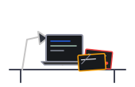
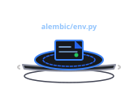
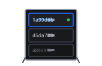
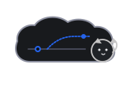
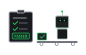
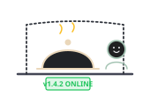

1. Directorio local
codigo en tu computadora

Sin conexionarchivos sin preparar
Conecta el agente para observar tu repositorio.
codigo en tu computadora

cambios seleccionados

historial en .git

ramas de tu equipo

robot y revision

merge y entrega

Trabaja desde tu terminal. Cada cambio aparece aqui automaticamente.
Ejecuta un comando Git en la carpeta observada para verlo aqui.
Desde la carpeta de tu proyecto ejecuta gitviz start.
Copia su codigo y conecta aqui. Si ya observabas otra carpeta, ejecuta
gitviz stop antes.